Sometimes the strongest campground review is not a number. Sometimes it is simply this: we packed the tents and came back three summers in a row.
The road north
The White Mountains always announced themselves before we reached camp. The highway narrowed into long green walls of pine, the horizon folded into hills, and the everyday world began to feel farther behind us.
Home in the woods: Double Site 17
Our basecamp was Double Site 17, a spacious, wooded, water-only campsite located directly on the banks of Lost River. The double site gave the family enough room for several tents, a shared canopy, meals together and the wonderfully organized disorder that comes with a big family tent camp.
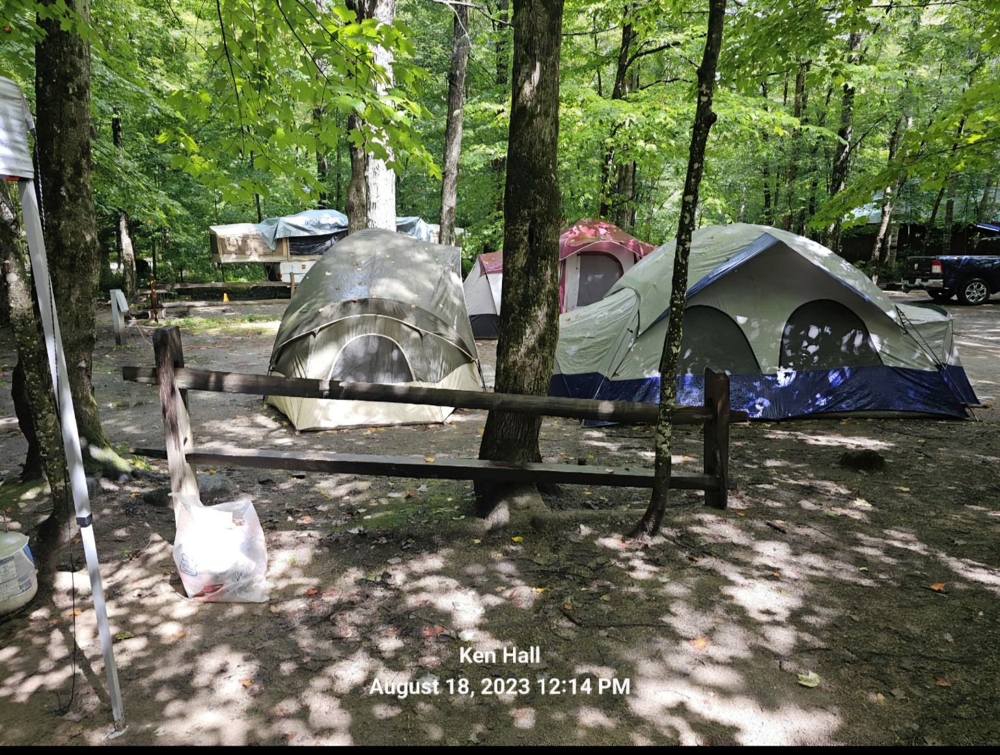
Trail Tater stayed here
Double Site 17
- Water hookup only
- Double campsite with room for multiple tents
- Directly on the banks of Lost River
- Wooded shade and a true family-basecamp feeling
- Short walk to campground facilities and the playground
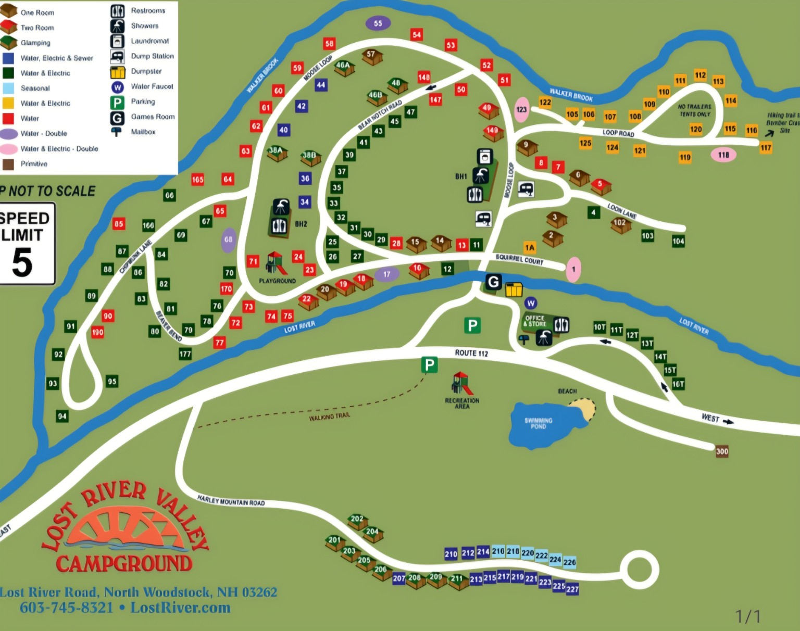
The river was part of the campsite
Lost River was not merely nearby. It was the sound behind camp, the cool place to wander, and one of the reasons the site felt so memorable. Rain changed the water minute by minute, making rings across the pools and deepening the colors of the stones.

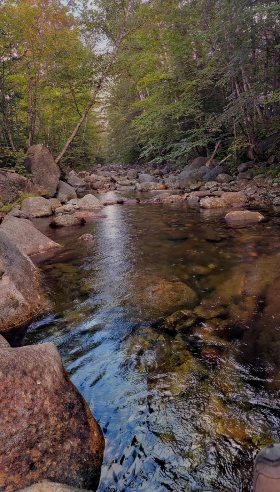
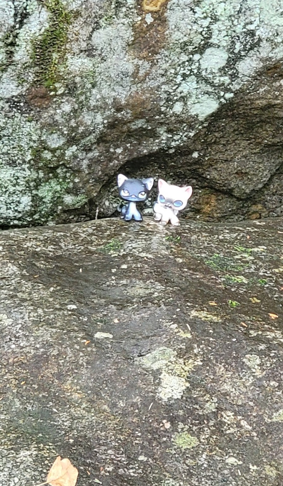
Life around camp
The photographs that matter most are not always the grand views. They are the table covered with breakfast supplies, the girls wandering down the campground road, and everyone gathered beneath a canopy after dark. That was the rhythm of Lost River: explore for a while, then return to the woods and to each other.
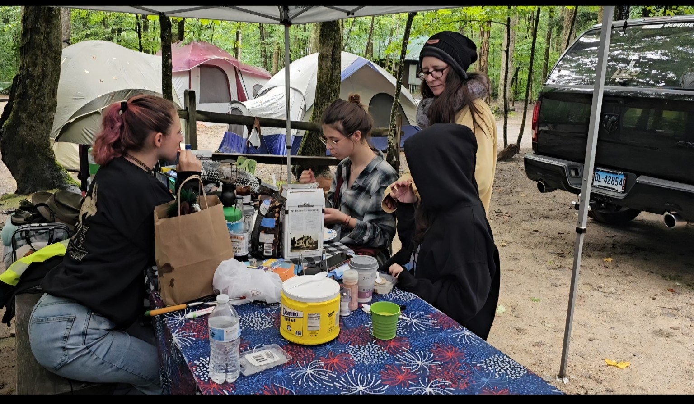
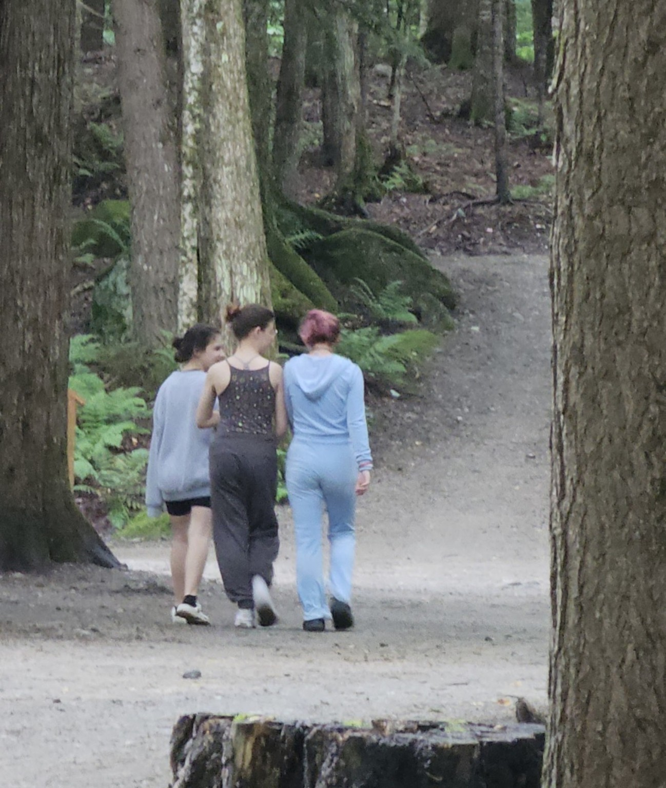
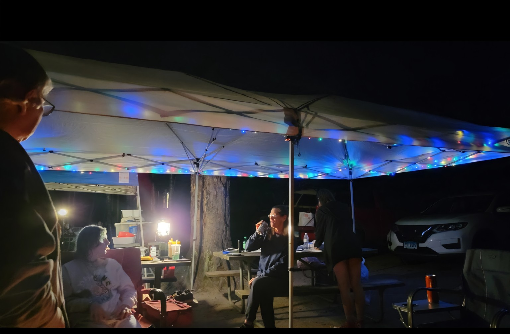
Lost River Valley was the first campground we loved enough to return to for three consecutive years. That says more than any ordinary rating could.
Clark’s Bears and White Mountain traditions
Trips into the White Mountains included nearby family stops. At Clark’s Bears, the bear figures shown here were fun photo props—not rides—and they became part of the trip’s collection of wonderfully goofy family photographs.
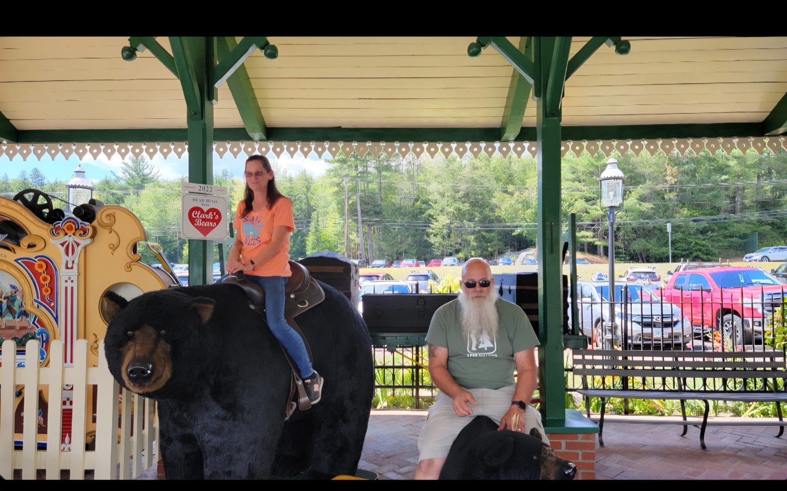
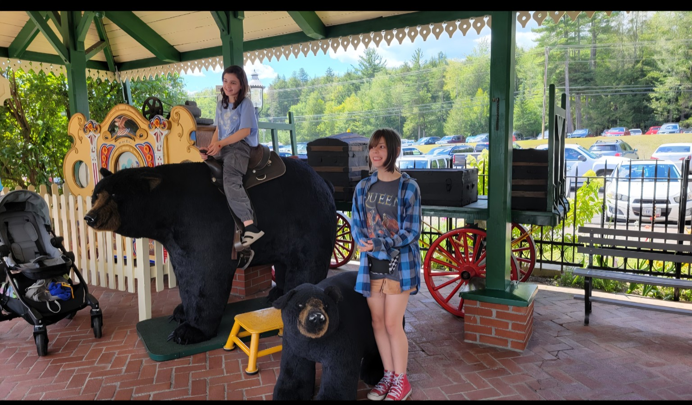
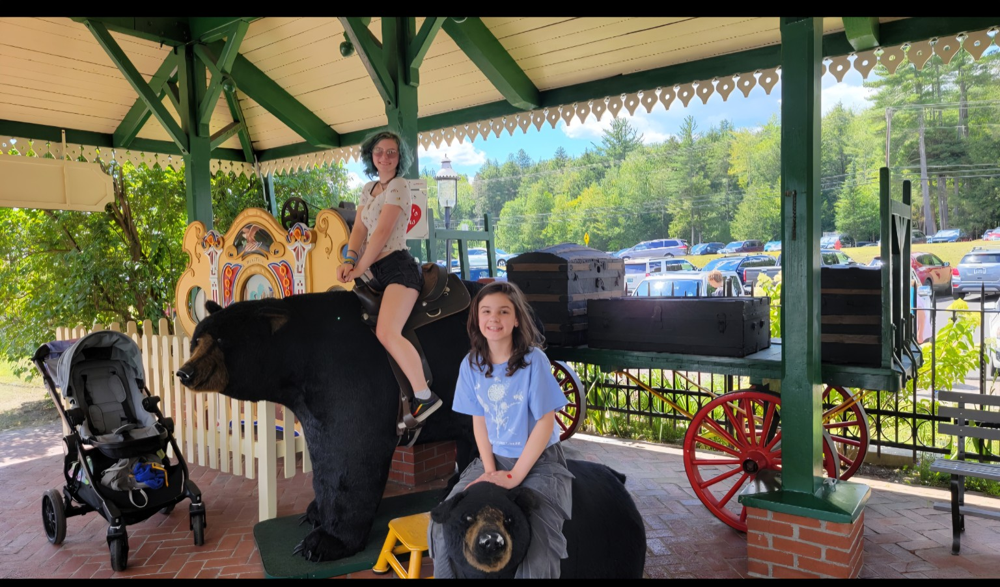
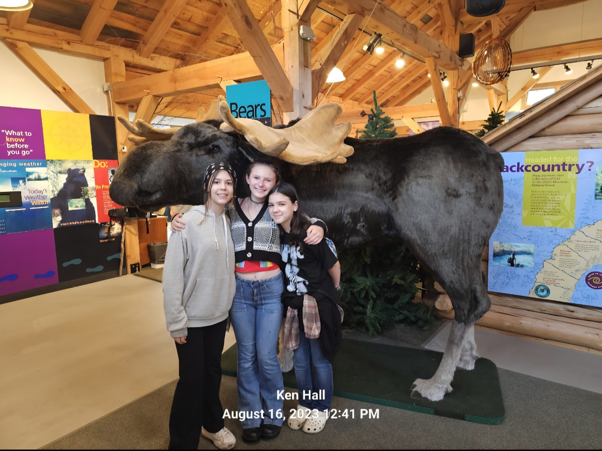
Official Trail Tater campground review
Lost River Valley Campground
The first campground that convinced the family to return three summers in a row.
Five Taters. Pack the tents—we already proved we would come back.
The full campfire album
Before Trail Tater had wheels.
These tent-camping years are part of the origin story. The camper changed, but the reasons for going never did.